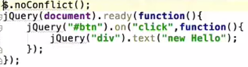
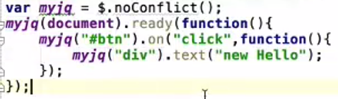

绑定事件：bind()、on()（推荐使用on）
解除绑定事件：unbind()、off()（推荐使用off）
事件冒泡 ：当事件发生后，这个事件就要开始传播(从里到外或者从外向里)。为什么要传播呢？因为事件源本身（可能）并没有处理事件的能力，即处理事件的函数（方法）并未绑定在该事件源上。例如我们点击一个按钮时，就会产生一个click事件，但这个按钮本身可能不能处理这个事件，事件必须从这个按钮传播出去，从而到达能够处理这个事件的代码中（例如我们给按钮的onclick属性赋一个函数的名字，就是让这个函数去处理该按钮的click事件），或者按钮的父级绑定有事件函数，当该点击事件发生在按钮上，按钮本身并无处理事件函数，则传播到父级去处理。
阻止事件冒泡：
阻止父级事件冒泡：event.stopPropagation()
组织所有事件冒泡：event.stopImmediatePropagation()
参考JQuery官网API文档。
利用id去捕获元素，例如：$("#id名称").想要捕获的属性
利用id去捕获元素，再去修改它的内容或属性值，例如：$("#id名称").想要捕获的属性(改变值)
append：在元素之后添加内容；
prepend：在元素之前添加内容；
before：在元素之前添加内容，不过一开始会先进行换行；
after：在元素之后添加内容，不过一开始会先进行换行。
例子：区分四者，可点击下方四个按钮。
remove：删除全部内容；
empty：删除子元素。
hide(参数为隐藏速度)、show(参数为显示速度)、Toggle()：单击切换隐藏和显示
fadeIn() / fadeOut() / fadeToggle() / fadeTo()：指定淡化到透明度（可自己设置）
slideDown() / slideUp() / slideToggle()
$("p").hide(1000,function(){
alert("The paragraph is now hidden");
});
load() 方法从服务器加载数据，并把返回的数据放入被选元素中。
第一种：$.myjq=function(){alert("Hello myJQuery.JQuery扩展。");} 调用方式：$.myjq();
第二种：$.fn.myjq=function(){$(this).text4("HELLO");} 调用方式：$("#demo4").myjq();
这里解决的是：如果当我们使用一些框架也使用美元符号$作为它的简写，那么就会与JQuery发生冲突。
如何解决，例子：
 
可查看JQuery文档，看它真实的高度。
width()：仅是元素本身的宽度，不包括内边距、边框和外边距。
height()：同上推论。
innerWidth()：元素本身宽度+内边距。
innerHeight()：同上推论。
outerWidth()：没有传递参数时，宽度为元素宽度+内边距+边框。如果里面传递参数true，则是整个盒子的宽度，即再加上外边距。
outerHeight()：同上推论。
children()：可选参数。该方法只会向下一级对 DOM树进行遍历。
find()：必选参数。返回被选元素的后代元素，一路向下直到最后一个后代。参数为什么，则返回与参数相同的所有后代。如果要返回被选元素的所有后代，则参数为("*")。
parent()：可选参数。该方法只会向上一级对 DOM 树进行遍历。
parents()：可选参数。返回被选元素的所有祖先元素，它一路向上直到文档的根元素 (html)。
parentsUntil()：必选参数。返回介于两个给定元素之间的所有祖先元素。
siblings()：返回被选元素的所有同胞元素。除本身元素。
next()：返回被选元素的下一个同胞元素。
nextAll()：返回被选元素的所有跟随的同胞元素(下面所有同级元素)。
nextUntil()：返回介于两个给定参数之间的所有跟随的同胞元素(下面所有同级元素)。
prev()：同next()同理可推。向上的。
prevAll()：同nextAll()同理可推。向上的。
prevUntil()：同prevUntil()同理可推。向上的。
三个最基本的过滤方法是：first(), last() 和 eq()，它们允许您基于其在一组元素中的位置来选择一个特定的元素。
其他过滤方法，比如 filter() 和 not() 允许您选取匹配或不匹配某项指定标准的元素。
first()：返回被选元素的首个元素。例子：$("div p").first();即选取首个 div元素内部的第一个p元素。
last()：返回被选元素的最后一个元素。
eq()：返回被选元素中带有指定索引号的元素。索引号从 0 开始，因此首个元素的索引号是 0 而不是 1。下面的例子选取第二个p元素（索引号 1）：
filter()：允许您规定一个标准。不匹配这个标准的元素会被从集合中删除，匹配的元素会被返回。例子：$("p").not(".intro");例子是返回不带有类名 "intro" 的所有p元素：
not()：返回不匹配标准的所有元素。与filter()刚好相反。